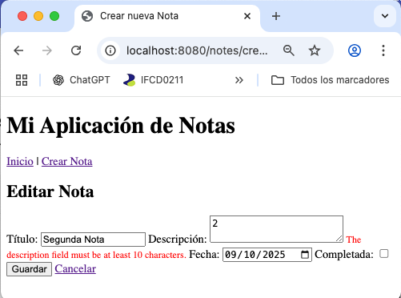
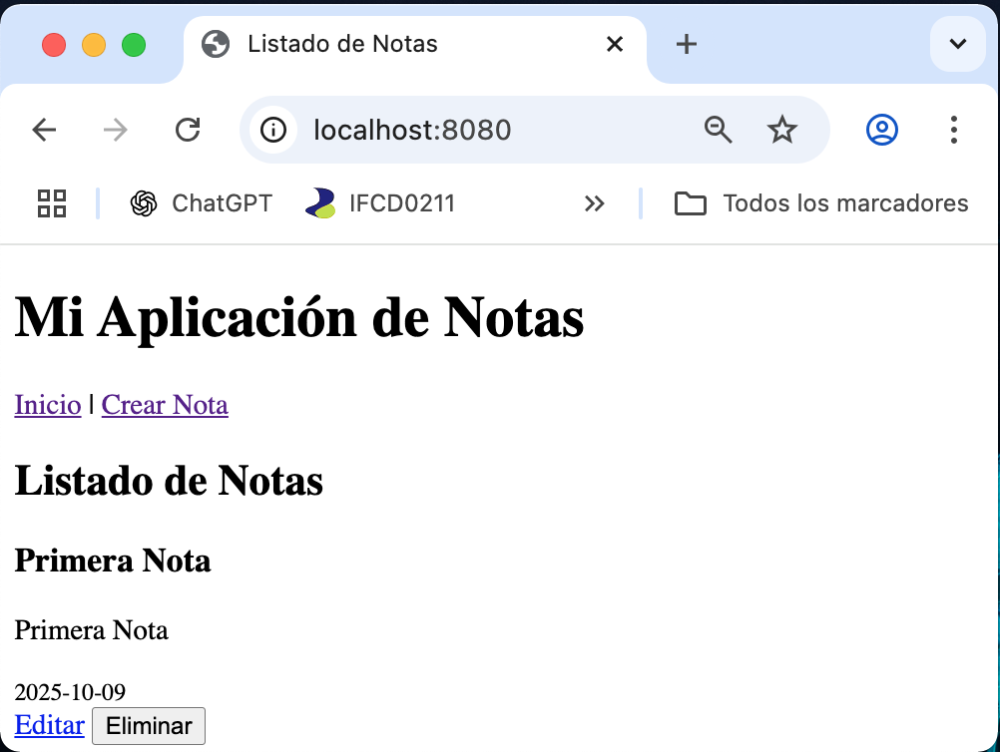

Validaciones, Rutas Resource y Mensajes del Sistema¶
Autoría de este tema
El contenido de este tema (las lecciones, la actividad y los anexos) es obra de Javier Beteta, del curso Introducción a Laravel. Adaptado para 2º DAW del IES Juan de Garay por Eva María Gómez Abad.
Validación de Datos¶
¿Qué es la validación y por qué es necesaria?¶
La validación es el proceso mediante el cual se verifica que los datos enviados por el usuario cumplen con unas reglas antes de ser almacenados en la base de datos.
Laravel ofrece un sistema de validación muy robusto, que nos permite validar datos tanto desde el controlador como mediante clases personalizadas.
Importante
Siempre debemos validar los datos antes de almacenarlos y antes de actualizarlos. Nunca debemos asumir que lo que llega del formulario es seguro o correcto.
Validar desde el controlador usando $request->validate()¶
Aclaración sobre el campo done¶
En este caso vamos a utilizar un checkbox para marcar si la nota está completada o no. En el formulario, si el checkbox está marcado, se enviará done=on, y si no está marcado, no se enviará nada. Para evitar problemas con el on vamos a modificar la vista de creación y edición de notas para que el valor enviado sea 1 o nada en el caso de no estar marcado.
El método $request->validate() es una forma rápida y sencilla de validar los datos directamente en el controlador. Recibe un array con las reglas de validación para cada campo. Si la validación falla, Laravel redirige automáticamente al formulario anterior con los errores y los datos antiguos.
Este método permite validar directamente dentro del método del controlador:
Función store()
<?php
public function store(Request $request)
{
$validated = $request->validate([
'title' => 'required|string|max:255',
'description' => 'required|string|min:10',
'date' => 'required|date',
'done' => 'nullable|boolean'
]);
Note::create($validated);
return redirect()->route('note.index')->with('success', 'Nota creada correctamente.');
}
Cuando la validación falla, Laravel redirige automáticamente al formulario anterior. Una buena técnica es utilizar el método old() para recuperar el valor anterior del campos de manera que el usuario no tenga que volver a escribirlo.
Haremos esto en todos los campos. Cuidado con los textarea que no tienen value y con los checkbox. Por ejemplo, para el checkbox:
Esto mostrará el checkbox marcado si el valor anterior era 1.
Reglas comunes de validación:¶
| Regla | Descripción |
|---|---|
required |
El campo es obligatorio |
string |
Debe ser una cadena de texto |
min:n |
Longitud mínima de caracteres |
max:n |
Longitud máxima de caracteres |
date |
Debe ser una fecha válida |
boolean |
true/false, 0/1, "yes"/"no" |
nullable |
El campo puede estar vacío |
Crear una clase de validación personalizada¶
Aunque en la documentación oficial de Laravel podemos encontrar un sinfín de reglas de validación, a veces necesitamos una validación más compleja o personalizada. Para ello como ejemplo vamos a crear una clase de validación para un DNI español, que tiene un formato específico de 8 dígitos seguidos de una letra mayúscula.
- Primer paso, crear la clase de validación personalizada:
Esto creará una clase en app/Rules/isDNI.php.
Ahora vamos a ver cómo sería la implementación de esta clase para validar un DNI español:
<?php
namespace App\Rules;
use Closure;
use Illuminate\Contracts\Validation\ValidationRule;
class isDNI implements ValidationRule
{
public function validate(string $attribute, mixed $value, Closure $fail): void
{
$value = strtoupper($value);
if (!preg_match('/^\d{8}[A-Z]$/', $value)) {
$fail('El :attribute no tiene un formato válido.');
return;
}
$numero = substr($value, 0, 8);
$letra = substr($value, -1);
$letras = 'TRWAGMYFPDXBNJZSQVHLCKE';
$letraCorrecta = $letras[$numero % 23];
if ($letra !== $letraCorrecta) {
$fail('El :attribute no es un DNI válido.');
}
}
}
Ahora ya lo podemos usar en nuestras reglas de validación:
Crear una clase FormRequest personalizada¶
Las clases FormRequest son una forma más estructurada de manejar la validación. Permiten separar la lógica de validación del controlador, lo que hace que el código sea más limpio y mantenible. Normalmente se crean para escenarios de validación compleja. Estas clases encapsulan la lógica de validación y autorización de una petición HTTP específica. Ahora, como ejemplo, vamos a crear una clase NoteRequest para manejar la validación de las notas.
Comando:
Esto creará una clase en app/Http/Requests/NoteRequest.php
Método authorize()
Este método define si el usuario tiene permiso para hacer esta petición. Para este curso lo dejaremos en true:
Importante
Si este método devuelve false, la validación no se ejecutará y se lanzará un error 403 (Forbidden).
Método rules()
Ahora vamos a definir unas reglas de validación de ejemplo para nuestro ejemplo de notas:
Ejemplo de reglas
Uso en el controlador:
En el controlador, en lugar de usar Request $request, usaremos NoteRequest $request. Laravel se encargará de validar automáticamente los datos antes de ejecutar el método.
Almacenar una nota
Antes de modificar el update()recordar que en la vista de edición el checkbox se envía como done=on o no se envía nada. Hacemos en esta vista lo mismo que en la de creación:
Hacemos lo mismo para el método update():
Actualizar una nota
Mostrar Errores de Validación¶
Mostrar errores en el formulario¶
Para el usuario es importante recibir feedback inmediato sobre los errores en el formulario. Laravel facilita esto con la variable $errors disponible en las vistas.
Puedes mostrar un error específico junto a cada campo:
<input name="title" value="{{ old('title') }}">
@error('title')
<small style="color:red">{{ $message }}</small>
@enderror
Resaltar campos con error (CSS)¶
También puedes añadir una clase CSS al campo si tiene error, para destacarlo visualmente según diseño de la aplicación:
Y luego en CSS puedes estilizar la clase .is-invalid.
Mostrar todos los errores juntos¶
Mostrar errores en la parte superior del formulario
Modificar la vista de edición como lo hicimos en la de creación¶
La vista de creación debe haber quedado así:
Vista de creación
@extends('layouts.app')
@section('title', 'Crear nueva Nota')
@section('content')
<h2>Editar Nota</h2>
<form action="{{ route('note.store') }}" method="POST">
@csrf
<label>Título:</label>
<input type="text" name="title" value="{{ old('title') }}" required>
@error('title')
<small style="color:red">{{ $message }}</small>
@enderror
<label>Descripción:</label>
<textarea name="description" required>{{ old('description') }}</textarea>
@error('description')
<small style="color:red">{{ $message }}</small>
@enderror
<label>Fecha:</label>
<input type="date" name="date" value="{{ old('date') }}" required>
@error('date')
<small style="color:red">{{ $message }}</small>
@enderror
<label>Completada:</label>
<input type="checkbox" name="done" {{ old('done') ? 'checked' : '' }}>
<button type="submit">Guardar</button>
<a href="{{ route('note.index') }}">Cancelar</a>
@error('done')
<small style="color:red">{{ $message }}</small>
@enderror
</form>
@endsection
también modificamos la vista del formulario de edición para mostrar los mensajes de error:
Vista de edición
@extends('layouts.app')
@section('title', 'Editar Nota')
@section('content')
<h2>Editar Nota</h2>
<form action="{{ route('note.update', $note->id) }}" method="POST">
@csrf
@method('PUT')
<label>Título:</label>
<input type="text" name="title" value="{{ $note->title }}" required>
@error('title')
<small style="color:red">{{ $message }}</small>
@enderror
<label>Descripción:</label>
<textarea name="description" required>{{ $note->description }}</textarea>
@error('description')
<small style="color:red">{{ $message }}</small>
@enderror
<label>Fecha:</label>
<input type="date" name="date" value="{{ $note->date }}" required>
@error('date')
<small style="color:red">{{ $message }}</small>
@enderror
<label>Completada:</label>
<input type="checkbox" name="done" {{ $note->done ? 'checked' : '' }}>
<button type="submit">Actualizar</button>
<a href="{{ route('note.index') }}">Cancelar</a>
@error('done')
<small style="color:red">{{ $message }}</small>
@enderror
</form>
@endsection
Algunos métodos interesantes de laravel que no hemos utilizado pero que se usan a menudo son:
| Clase | Método | Descripción |
|---|---|---|
Illuminate\Support\Facades\Validator |
make() |
Crear un validador |
Illuminate\Support\Facades\Validator |
fails() |
Verificar si la validación falló |
Illuminate\Support\Facades\Validator |
errors() |
Obtener los errores de validación |
Illuminate\Support\Facades\Validator |
validate() |
Validar y redirigir automáticamente |
Illuminate\Support\Facades\Request |
old() |
Obtener el valor anterior de un campo |
Illuminate\Support\Facades\Request |
flash() |
Guardar datos en la sesión para la siguiente petición |
Ahora vamos a probar a crear una nota con una descripción inferir a los 10 caracteres y veremos el mensaje de error.
Validación de datos

{ width=400px }Ahora corregimos el error y vemos que la nota se crea correctamente. Además nos aparece un mensaje de éxito.
Validación de datos

{ width=400px }Ahora podéis comprobar que:
- En la edición las validaciones y mensajes de éxito funcionan igual.
- El campo ´done´ funciona correctamente tanto en creación como en edición.
campo done
Si has seguido al pie de la letra las instrucciones, el campo done no va a funcionar. Al añadir la clase NoteRequest pedimos que el campo sea boolean pero a este punto está llegando un on cuando el checkbox está marcado, o nada cuando no lo está. Y por tanto no llegaremos nunca a que se ejecute el método store() o update(), que es donde estábamos manejando el valor del checkbox.
Solución
Necesitamos que cuando se valida el campo done, si está marcado llegue como true y si no está marcado como false. Ya que en la validación hemos especificado que debe ser un booleano. Para ello vamos a usar el método prepareForValidation() que nos permite modificar los datos antes de que se apliquen las reglas de validación.
Modificar datos antes de validar
Añadimos este método en la clase NoteRequest:
De esta manera nos aseguramos que el campo done siempre llega como 1 o 0, y por tanto la validación funciona correctamente.
prepareForValidation()
Este método es muy útil para modificar cualquier dato antes de que se aplique la validación. Por ejemplo, podríamos usarlo para formatear fechas, convertir cadenas a mayúsculas/minúsculas. No siempre la información que llega del formulario está en el formato que necesitamos para validar o almacenar. Y que no esté en el formato no significa que no sea válido. Pero la validación de laravel es estricta y debemos asegurarnos que los datos cumplen las reglas que hemos definido.
Traducir los mensajes de error¶
Laravel trae sus mensajes de error por defecto en inglés. Hasta la versión los ficheros de traducción se encontraban en resources/lang/en/validation.php. A partir de Laravel 10 es necesario activar el sistema de traducción para que se publiquen los archivos de idioma. Para ello ejecutamos el siguiente comando:
Esto creará los archivos de traducción en src/lang/. Ahora si queremos traducir los mensajes de error al castellano, por ejemplo, podemos copiar el archivo src/lang/en/validation.php a src/lang/es/validation.php y traducir los mensajes.
Para que Laravel use el idioma español, debemos configurar el valor de locale en el archivo config/app.php:
Mensajes de Éxito¶
Para mejorar la experiencia del usuario, es buena práctica mostrar mensajes de éxito o error después de operaciones como crear, actualizar o eliminar. PPara ello vamos a usar los mensajes flash, que permiten mandar un mensaje entre peticiones almacenándolo en la sesión.
Flash de sesión con with()¶
Este método permite guardar un mensaje en la sesión que se mostrará en la siguiente petición. Vamos a usarlo para mostrar un mensaje de éxito después de crear o actualizar o eliminar una nota.
En la función store() del controlador:
En la función update():
En la función destroy():
Mostrar el mensaje en la vista (por ejemplo, en layout):¶
Mostrar mensaje de éxito
O incluirlo como partial:
_partials/messages.blade.php
Partial para mensajes
@if (session('success'))
<div class="alert alert-success"
style="padding: 10px; margin-bottom: 20px;
background-color: #d4edda;
color: #155724;
border-color: #c3e6cb;
border-radius: 5px;">
{{ session('success') }}
</div>
@endif
@if (session('danger'))
<div class="alert alert-danger"
style="padding: 10px; margin-bottom: 20px;
background-color: #f8d7da;
color: #721c24;
border-color: #f5c6cb;
border-radius: 5px;">
{{ session('danger') }}
</div>
@endif
Y en el layout:
Rutas Resource¶
¿Qué son?¶
Las rutas Route::resource() generan automáticamente todas las rutas necesarias para un CRUD completo. De esta manera nos ahorramos definir todas las rutas para todos los modelos.
Acciones generadas¶
| Ruta | Método | Acción |
|---|---|---|
| GET /note | index | Mostrar todas las notas |
| GET /note/create | create | Formulario para nueva nota |
| POST /note | store | Guardar nueva nota |
| GET /note/{note} | show | Mostrar una nota |
| GET /note/{note}/edit | edit | Formulario para editar |
| PUT/PATCH /note/{note} | update | Actualizar nota |
| DELETE /note/{note} | destroy | Eliminar nota |
Personalización¶
- Solo algunas rutas:
- Excluir algunas:
Ver rutas disponibles¶
Te muestra todas las rutas definidas, su método, URI y nombre.
Crear un controlador tipo resource¶
Este comando crea todos los métodos básicos (index, create, store, show, edit, update, destroy).
Conclusiones¶
- Validar datos es esencial para proteger la integridad de la base de datos.
- Los mensajes de error y éxito mejoran la experiencia del usuario.
- Las rutas resource simplifican la estructura del código.